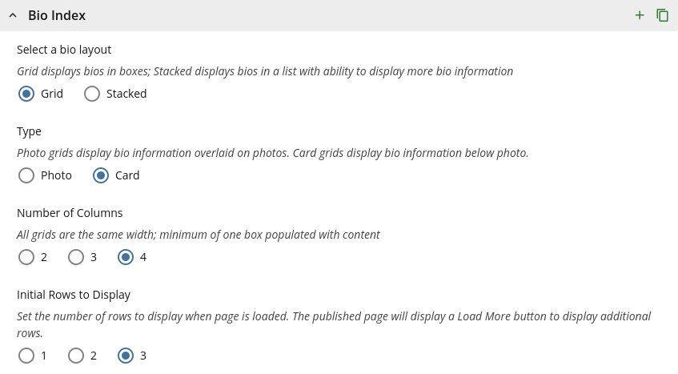
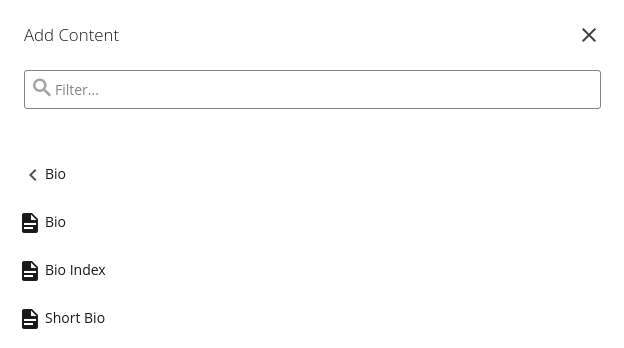

People
Who's who: grids of people, contact cards, stacked and short bios, a bio page, how Cascade writes them and a list of people in an app.
Privacy
On a public page, show only people who've agreed to be listed, with only the contact details they've agreed to share.
On This Page
Team Grid Template
A grid of the people in an office, each in a white card with a portrait, their name,
their title in bold and a link to their full bio. Put the cards on a color, such as
blue, to set the group apart as one section of the page. It's a
grid column4 boxes (or column3) with an
<h1> for the group. Use portraits of the same shape so the names
line up; square ones keep the cards short. With no bio pages, leave out the links and
the call to action.
Style
Word the link the same way on every card, such as “Read Full Bio.”
grid column4 boxes, a color, cta
Our Team
In Cascade
- Make a page for each person, all in one folder, with Add Content › Bio › Bio.
- In that folder, use Add Content › Bio › Bio Index.
- In its Bio Index section, choose Grid, then Card, and the number of columns. (Photo puts the names over the photos instead; see Photo Grid.)
- Set Style to a color, such as Blue.
Initial Rows to Display holds the rest back behind a Load More button. For menus that narrow the list, see Filters.

Leadership Grid Template
Square photos with each person's name and title centered under them, on a gray band.
It introduces a few leaders on an overview page, without links to bios. It's a
grid column3 grey boxes; center the text with the template's
aligncenter instead of inline styles.
grid column3 grey boxes, aligncenter
Leadership

Andrew Carnegie
Director of Teaching Technology
Andrew Mellon
Associate Director, Office Hours Queue
Margaret Morrison
Manager, Equipment Checkout
Contact Cards Template
A card for each person with their photo, name, title and how to reach them, grouped by
team. Each team is its own
grid column3 grey boxes (or column4) with an
<h1> and an id, so a sidebar link or the
On This Page box can jump to it.
- Photos all the same shape, such as 3:2, before the heading rather than inside it, so screen readers don't read the photo as part of the name.
-
Name | title in a
rule-bottomheading, then the contact details. - Email as an email link that names the person, such as "Email Andrew Carnegie."
grid column3 grey boxes, rule-bottom,
data-cmu-email
Management Team

Stacked Bios Template
One person per row: a portrait, their name and title, a line about their work, a Read Full Bio link and Contact. It's for when a card isn't enough, such as each person's research area, or for a short list with the full bios shown in place. Each row is the bio page's top, with a rule between rows.
floatleft caption thumb, cta, contact,
rule-bottom

Andrew Mellon
Teaching Consultant
Course design, assessment and active learning in large lectures.
Hunt Library, Room A12
4909 Frew Street
Pittsburgh, PA 15213
Margaret Morrison
Data Analyst
Course evaluations, survey design and teaching-related data requests.
In Cascade
A Bio Index, as for the Team Grid, with Stacked. To show each full bio in place, set Collapse Region to Yes.
Short Bios Template
A short bio for each person on one page, for a quick contact page or a group whose
bios are a paragraph or two, such as an advisory board. Each person gets a band of
their own, alternating gray and white, with a Contact link and their links in a box
beside the bio. Photos are optional; leave them out unless everyone has one. Class
years for alumni go after the name, in the template's indicia:
<span class="indicia">(E 1990)</span>.
content, grey, contact, sidebar,
darkgrey invert, list, indicia
Andrew Carnegie (E 1990)
Chair, Advisory Board
Hunt Library, Room A10
4909 Frew Street
Pittsburgh, PA 15213
Carnegie founded the Carnegie Technical Schools in 1900 and has chaired the board since. He reads every annual report and asks about each one.
Margaret Morrison (A 2005, E 2008)
Member, Advisory Board
Morrison led the women's college from its first class and now advises on student life and housing.
In Cascade
- Add Content › Bio › Short Bio.
- Write the Intro Text, then add a section for each person.
Bio Page Template
One person's page: their portrait beside their name and title, a Contact link that opens to show how to reach them, their bio in short sections and a box of related links in the sidebar. In a CMS, the page type writes all of this; the markup is here to show the parts.
-
The portrait is
p.floatleft.caption.thumbaround the image, about a third of the column. It sits beside the name only when both are directly in the page's.contentcolumn, as here; anywhere else, the heading drops below it. - The title names the office or department after the job, such as “Director of Teaching Technology, Office of the Provost.”
-
Contact is a
collapsedheading, like the FAQ's. Inside, an<address>lists the email address as an email link with the classicon, and the phone and fax numbers withicon telandicon fax. The template draws an icon beside each. A second<address>beside it gives the office. -
The bio gets an
<h2>for each part that has something to say, such as Bio, Education, Research, Projects and Publications. Leave out the empty ones. -
Related links, such as a personal site or lab, go in a gray
listbox in the sidebar.
floatleft caption thumb, contact, address,
icon, sidebar, list grey
Andrew Carnegie
Director of Teaching Technology, Office of the Provost
Hunt Library, Room A10
4909 Frew Street
Pittsburgh, PA 15213
Bio
Carnegie leads Teaching Technology, the office behind Equipment Checkout and the course tools faculty use every day. Before coming to the university, he ran the Keystone Bridge Company's drafting room.
Education
Self-taught, with a library card from Colonel James Anderson's library in Allegheny.
Projects
A loaner program for classroom cameras, and a guide to captioning lecture video.
In Cascade
Add Content › Bio › Bio. The page has a field for each part: the photo, name, title, contact details, each section of the bio and the related links.

People List App
A list of people with a small round headshot beside each name and title, for a
directory, a team or the instructors of a course. With more than a screenful, put a
search above it that matches names, titles and each
row's data-keywords as people type, and a count under it. The filter is
your app's script; try this one.
cmu-people, cmu-search-bar, cmu-results-count
-
Associate Teaching Professor, Computer Science
-
Assistant Professor, Chemistry
-
Teaching Consultant, Eberly Center
-
Associate Professor, Statistics and Data Science
-
Director of Undergraduate Studies, English
Showing all 5 people
Use a real photo cropped to a square; the kit makes it round. With no photo, leave the image out instead of showing a blank one.
In Cascade
Filters on an Index
On a Bio Index, Course Index or News Index, menus for narrowing the list, such as by research area, aren't markup you write. They come from a site-wide list of categories:
-
The categories block (an XHTML/Data Definition block named
categories) holds the site's groups, such as research areas or concentrations, and the values in each. - Each bio page picks its values in its Filters section.
- On the index page, the Filters section turns on each group to show as a menu.
Name the groups for what people look for, such as “Research Area,” and keep each to a dozen values or so. In an app, use the People List's search instead.